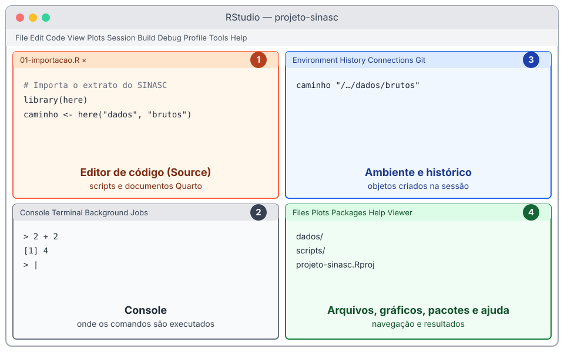

2 + 2
#> [1] 41 R, RStudio e a organização do trabalho
Encontro previsto: 1 · Pré-requisitos: nenhum · Pacotes: R base, here e tidyverse (apenas para ilustrar o carregamento de pacotes)
Objetivos de aprendizagem
Ao final deste capítulo, espera-se que o estudante seja capaz de distinguir o R, linguagem de programação e ambiente de computação estatística, do RStudio, ambiente integrado de desenvolvimento; reconhecer os painéis do RStudio e a função de cada um; executar comandos tanto no console quanto a partir de um script salvo; criar um projeto do RStudio com uma estrutura de pastas adequada a uma análise de dados; compreender o que são o diretório de trabalho e os caminhos relativos; instalar e carregar pacotes, distinguindo pacote de biblioteca; e consultar a documentação das funções.
Antes de importar uma base de dados, calcular um indicador ou construir um gráfico, é preciso conhecer o ambiente em que esse trabalho será feito e adotar alguns hábitos que, embora pareçam secundários no início, determinam se uma análise poderá ser compreendida, repetida e corrigida no futuro. Este capítulo trata desses dois aspectos. A primeira metade apresenta o R, o RStudio e a forma de executar comandos; a segunda trata da organização do trabalho em projetos, da instalação de pacotes e da busca de ajuda.
Nenhum conhecimento prévio de programação é necessário. Alguns termos, como objeto e função, aparecem aqui de passagem e serão definidos com cuidado no Capítulo 2.
1.1 O que é o R e por que utilizá-lo em Saúde Pública
O R é, ao mesmo tempo, uma linguagem de programação e um ambiente de computação voltado à análise estatística e à produção de gráficos. Foi criado no início da década de 1990 por Ross Ihaka e Robert Gentleman, no Departamento de Estatística da Universidade de Auckland, na Nova Zelândia, tomando como modelo a linguagem S, desenvolvida nos laboratórios Bell (IHAKA; GENTLEMAN, 1996). Desde então, seu desenvolvimento é conduzido por um grupo internacional de colaboradores, e o programa é distribuído gratuitamente sob a Licença Pública Geral GNU, o que significa que qualquer pessoa pode usá-lo, estudar seu código e redistribuí-lo. O R funciona nos sistemas operacionais Windows, macOS e Linux.
Uma diferença importante entre o R e programas estatísticos baseados em menus é que, no R, as operações são descritas por comandos escritos. À primeira vista, isso parece apenas uma dificuldade adicional, e de fato exige algum tempo de aprendizagem. A contrapartida é que o conjunto de comandos de uma análise, salvo em um arquivo, constitui um registro completo e exato do que foi feito: quais dados foram lidos, quais registros foram excluídos, como cada variável foi construída e quais procedimentos foram aplicados. Esse registro pode ser lido por outra pessoa, revisado, corrigido e executado novamente. Em pesquisa, essa propriedade é a base da reprodutibilidade; em serviços de saúde, permite que uma análise feita uma vez seja repetida a cada nova atualização dos dados, sem refazer manualmente cada etapa.
Saúde Pública em foco
Considere a equipe de vigilância de um município que publica semanalmente um boletim sobre dengue, com o número de casos notificados por semana epidemiológica, a incidência por bairro e a distribuição dos casos por faixa etária. Se as tabelas e os gráficos forem produzidos manualmente em uma planilha, cada edição exige repetir dezenas de operações, com risco de erro a cada repetição. Se o mesmo boletim for produzido por um script, basta substituir o arquivo de dados e executar os comandos novamente. O script também documenta as definições usadas (por exemplo, quais classificações finais foram consideradas como casos), o que facilita a comparação entre edições e a passagem do trabalho para outros profissionais.
Outra característica do R é a extensibilidade. Além das funções que acompanham a instalação básica, a comunidade de usuários publica pacotes que acrescentam novas funcionalidades. O principal repositório desses pacotes, o CRAN (Comprehensive R Archive Network), reunia mais de 25 mil pacotes em novembro de 2026, cobrindo desde a manipulação de dados até métodos estatísticos especializados. Para a epidemiologia, o próprio CRAN mantém uma página temática que organiza os pacotes da área (https://cran.r-project.org/web/views/Epidemiology.html). Há também pacotes desenvolvidos para dados brasileiros, como o microdatasus, que baixa e pré-processa os microdados dos sistemas de informação do DATASUS (SALDANHA; BASTOS; BARCELLOS, 2019) e que será usado nos capítulos sobre importação de dados.
Convém, desde já, uma ponderação. O R é uma ferramenta, e o domínio da ferramenta não substitui o conhecimento sobre os dados e os métodos. Um comando executado sem erro pode produzir um resultado sem sentido se a variável foi mal definida ou se o procedimento estatístico não é adequado à pergunta. Por isso, ao longo do livro, cada técnica computacional é acompanhada de uma discussão sobre o que ela significa no contexto da análise de dados em saúde.
1.2 Instalação e primeira configuração
R e RStudio: dois programas diferentes
Quem começa a usar o R costuma instalar dois programas, e é útil entender desde o início a diferença entre eles. O R é o programa que efetivamente interpreta e executa os comandos. O RStudio é um ambiente integrado de desenvolvimento, isto é, um programa que oferece uma interface mais confortável para trabalhar com o R: um editor de textos que destaca a sintaxe do código, uma área para visualizar gráficos, um navegador de arquivos, acesso à documentação e diversas outras facilidades. O RStudio não funciona sem o R, mas o R funciona sem o RStudio. Uma analogia frequente compara o R ao motor de um carro e o RStudio ao painel e aos comandos que permitem conduzi-lo.
O RStudio é desenvolvido pela empresa Posit (que, até 2022, se chamava RStudio) e tem uma versão gratuita para uso em computadores pessoais, que é a utilizada neste livro. Existem outros ambientes de desenvolvimento capazes de trabalhar com o R, mas o RStudio é o mais difundido no ensino e é o adotado pelas obras de referência deste livro.
A instalação deve seguir esta ordem: primeiro o R, obtido no CRAN (https://cran.r-project.org/), e depois o RStudio, obtido no sítio da Posit (https://posit.co/download/rstudio-desktop/). As instruções detalhadas para cada sistema operacional estão no Apêndice A. Os exemplos deste livro exigem a versão 4.1 do R ou superior.
Configuração recomendada
Antes de começar a trabalhar, vale ajustar três opções do RStudio, acessíveis pelo menu Tools > Global Options. Elas estão resumidas na Tabela 1.1.
| Opção | Onde encontrar | Valor recomendado |
|---|---|---|
| Restore .RData into workspace at startup | General > Basic | Desmarcada |
| Save workspace to .RData on exit | General > Basic | Never |
| Use native pipe operator, |> (requires R 4.1+) | Code > Editing | Marcada |
| Default text encoding | Code > Saving | UTF-8 |
As duas primeiras opções merecem uma explicação. Durante uma sessão de trabalho, o R mantém na memória os objetos criados (bases de dados, resultados intermediários, modelos). Por padrão, ao fechar o programa, o RStudio oferece salvar todo esse conteúdo em um arquivo chamado .RData e o recarrega automaticamente na sessão seguinte. Parece conveniente, mas tem um efeito indesejado: com o tempo, a sessão passa a conter objetos cuja origem já não se conhece, e a análise passa a depender deles sem que isso esteja registrado em nenhum script. Ao desativar esse comportamento, cada sessão começa vazia, e tudo o que for necessário precisa ser recriado pelos scripts. Essa é a forma mais simples de garantir que os scripts contenham, de fato, toda a análise.
A terceira opção define o operador que o RStudio insere pelo atalho de teclado do pipe, que será apresentado no Capítulo 6. A quarta garante que os arquivos sejam salvos com a codificação UTF-8, o que evita problemas com acentos e cedilhas ao abrir os arquivos em outros computadores.
1.3 Conhecendo o RStudio
Ao abrir o RStudio, a janela aparece dividida em painéis, como mostra a Figura 1.1. Na configuração padrão são quatro, e cada um reúne algumas abas.

O painel 1, no canto superior esquerdo, é o editor de código (Source). É nele que se escrevem e se editam os scripts e os documentos Quarto. Quando nenhum arquivo está aberto, esse painel fica oculto, e o console ocupa toda a coluna da esquerda.
O painel 2, abaixo do editor, é o console. É o lugar em que o R recebe os comandos e devolve os resultados. Ao lado dele há abas para o terminal do sistema operacional e para tarefas executadas em segundo plano, que não serão usadas neste livro.
O painel 3, no canto superior direito, tem como aba principal o ambiente (Environment), que lista os objetos existentes na sessão, como as bases de dados carregadas, com informações resumidas sobre cada um. A aba History guarda os comandos executados no console.
O painel 4, no canto inferior direito, reúne o navegador de arquivos (Files), a área em que os gráficos são exibidos (Plots), a lista de pacotes instalados (Packages), a documentação (Help) e um visualizador para conteúdos em formato de página da internet (Viewer).
A posição dos painéis pode ser alterada em Tools > Global Options > Pane Layout. Neste livro, as referências aos painéis supõem a disposição padrão.
1.4 Console e scripts
Executando comandos no console
A forma mais direta de usar o R é digitar um comando no console e pressionar Enter. O símbolo > no início da linha, chamado prompt, indica que o R está pronto para receber um comando. O exemplo a seguir usa o R como calculadora.
O resultado aparece precedido de [1]. Esse número entre colchetes indica a posição do primeiro valor exibido naquela linha; como o resultado tem um único valor, a indicação é sempre [1]. Quando um resultado contém muitos valores e ocupa várias linhas, cada linha começa com a posição do seu primeiro elemento, o que ajuda a localizar valores em resultados longos. Neste livro, os resultados aparecem logo abaixo do código, precedidos de #>, para que não sejam confundidos com os comandos.
Alguns comandos não fazem cálculos, mas consultam informações. O comando abaixo mostra a versão do R em uso.
R.version.string
#> [1] "R version 4.5.3 (2026-03-11)"Se um comando for enviado incompleto, por exemplo com um parêntese aberto e não fechado, o R não o executa e exibe o símbolo + no início da linha seguinte, indicando que espera a continuação. Basta completar o comando, ou pressionar Esc para cancelá-lo e voltar ao prompt. A tecla Esc também interrompe um comando que esteja demorando mais do que o esperado.
Escrevendo e executando scripts
O console é adequado para experimentos rápidos, mas os comandos digitados nele não ficam registrados de forma organizada. Para qualquer trabalho que se pretenda guardar, os comandos devem ser escritos em um script: um arquivo de texto simples, com extensão .R, que contém a sequência de comandos da análise. Um novo script é criado pelo menu File > New File > R Script e aparece no editor de código.
No script, os comandos podem ser executados um a um, posicionando o cursor na linha desejada e usando o atalho Ctrl + Enter (no macOS, Cmd + Return). O comando é enviado ao console, executado, e o cursor avança para o comando seguinte. Também é possível selecionar várias linhas e executá-las de uma vez com o mesmo atalho, ou executar o script inteiro. A Tabela 1.2 reúne os atalhos de uso mais frequente.
| Ação | Windows e Linux | macOS |
|---|---|---|
| Novo script | Ctrl + Shift + N | Cmd + Shift + N |
| Salvar o arquivo | Ctrl + S | Cmd + S |
| Executar a linha atual ou a seleção | Ctrl + Enter | Cmd + Return |
| Executar o script inteiro | Ctrl + Shift + Enter | Cmd + Shift + Return |
| Comentar ou descomentar linhas | Ctrl + Shift + C | Cmd + Shift + C |
Inserir o operador de atribuição <- |
Alt + - | Option + - |
| Reiniciar a sessão do R | Ctrl + Shift + F10 | Cmd + Shift + 0 |
| Interromper a execução | Esc | Esc |
Tudo o que vem depois do símbolo # em uma linha é um comentário, ignorado pelo R. Comentários servem para explicar o propósito de um trecho do código, registrar decisões e dividir o script em seções. Um bom comentário diz por que algo foi feito, e não apenas o que foi feito, já que o próprio código mostra o que está sendo feito.
# Número de nascidos vivos e de óbitos infantis em um município hipotético
# (valores fictícios, apenas para ilustração)
1250 + 1310 + 1198 # nascidos vivos em três anos consecutivosOs nomes dos arquivos também merecem atenção. Recomenda-se usar apenas letras minúsculas sem acentos, números, hífens e sublinhados, evitando espaços, e numerar os scripts na ordem em que devem ser executados, como em 01-importacao.R, 02-limpeza.R e 03-analise.R. Essa convenção facilita a leitura do projeto por outras pessoas e evita problemas de compatibilidade entre sistemas operacionais.
O script é o produto do trabalho
Um hábito útil é reiniciar periodicamente a sessão do R (Session > Restart R) e executar o script desde o início. Se o script não produzir os mesmos resultados, há alguma etapa da análise que foi feita apenas no console e não foi registrada. Combinado com a configuração recomendada na Seção 1.2.2, esse hábito garante que o script contenha a análise completa.
1.5 Projetos do RStudio e organização de pastas
Diretório de trabalho e caminhos
Sempre que o R lê ou grava um arquivo, precisa saber onde ele está. O endereço de um arquivo no computador é chamado de caminho. Há duas formas de escrevê-lo. Um caminho absoluto descreve a localização completa do arquivo a partir da raiz do sistema, como C:/Users/ana/Documents/projeto-sinasc/dados/brutos/sinasc.csv no Windows ou /Users/ana/Documents/projeto-sinasc/dados/brutos/sinasc.csv no macOS. Um caminho relativo descreve a localização a partir de uma pasta de referência, como dados/brutos/sinasc.csv.
A pasta de referência usada pelo R para interpretar caminhos relativos é o diretório de trabalho. A função getwd() (de get working directory) informa qual é ele.
getwd()
#> [1] "/Users/ana/Documents/projeto-sinasc"O problema dos caminhos absolutos é que eles só funcionam no computador em que foram escritos. Se o script for enviado a um colega, ou se a pasta for movida para outro lugar, todos os caminhos deixam de funcionar. Por essa razão, scripts que contêm o comando setwd(), usado para mudar o diretório de trabalho para um endereço absoluto, devem ser evitados em qualquer trabalho que se pretenda compartilhar. A solução recomendada é organizar cada análise em um projeto e usar caminhos relativos à pasta do projeto.
Barras nos caminhos
No Windows, os caminhos costumam ser exibidos com barras invertidas (\). No R, a barra invertida tem um significado especial dentro de textos e não pode ser usada diretamente. Use sempre a barra comum (/), que funciona em todos os sistemas operacionais.
Projetos do RStudio
Um projeto do RStudio é uma pasta que contém um arquivo com extensão .Rproj. Quando o projeto é aberto, seja pelo menu File > Open Project, seja com um duplo clique no arquivo .Rproj, o RStudio inicia uma nova sessão do R e define automaticamente a pasta do projeto como diretório de trabalho. Assim, todos os caminhos relativos passam a ser interpretados a partir dela, independentemente do computador ou do lugar em que a pasta esteja.
Para criar um projeto, usa-se o menu File > New Project > New Directory > New Project, escolhendo o nome da pasta e o local em que ela será criada. Se a pasta já existir, a opção Existing Directory transforma-a em projeto. O RStudio cria o arquivo .Rproj e uma pasta oculta, .Rproj.user, na qual guarda informações sobre a interface, como os arquivos que estavam abertos. Essa pasta não precisa ser editada nem compartilhada.
Cada análise, ou cada conjunto de análises relacionadas, deve ter seu próprio projeto. No contexto deste livro, um bom ponto de partida é um projeto para a disciplina, no qual os exercícios de cada capítulo sejam guardados, e projetos separados para trabalhos maiores, como o trabalho final.
Uma estrutura de pastas para análises de dados
Não existe uma única forma correta de organizar as pastas de um projeto, mas convém adotar uma estrutura padronizada e mantê-la em todos os projetos. A estrutura a seguir, usada ao longo do livro, separa os dados conforme sua origem, os scripts, os resultados e os relatórios.
projeto-sinasc/
├── projeto-sinasc.Rproj
├── README.md
├── dados/
│ ├── brutos/
│ └── processados/
├── scripts/
├── resultados/
│ ├── figuras/
│ └── tabelas/
└── relatorios/A pasta dados/brutos/ guarda os arquivos tal como foram obtidos da fonte e nunca é editada manualmente. Toda correção, recodificação ou exclusão de registros é feita por scripts, e os resultados dessas operações são gravados em dados/processados/. Dessa forma, é sempre possível refazer a preparação dos dados a partir dos arquivos originais e verificar cada decisão tomada. As pastas resultados/figuras/ e resultados/tabelas/ recebem os produtos da análise, e a pasta relatorios/ guarda os documentos Quarto que reúnem texto e resultados, assunto do Capítulo 4. O arquivo README.md é um texto simples que descreve o objetivo do projeto, a origem dos dados e a ordem de execução dos scripts.
Caminhos robustos com o pacote here
Dentro de um projeto, caminhos relativos como dados/brutos/sinasc.csv funcionam bem quando o diretório de trabalho é a pasta do projeto. Há situações, porém, em que o diretório de trabalho muda: um documento Quarto, por exemplo, é executado a partir da pasta em que está salvo, e não da pasta do projeto. Para evitar que os caminhos funcionem em um lugar e falhem em outro, recomenda-se o pacote here, cuja função here() constrói caminhos a partir da raiz do projeto, identificada pela presença do arquivo .Rproj.
library(here)
here("dados", "brutos", "sinasc.csv")
#> [1] "/Users/ana/Documents/projeto-sinasc/dados/brutos/sinasc.csv"Cada argumento da função corresponde a um nível do caminho, e o resultado é o caminho completo, montado com o separador adequado ao sistema operacional. O mesmo código, executado no computador de outra pessoa, produz o caminho correto naquele computador. A forma de usar esse caminho para ler um arquivo de dados será vista no Capítulo 5. O comando library(here), que torna as funções do pacote disponíveis, é o assunto da próxima seção.
1.6 Pacotes e bibliotecas
O que são pacotes
Um pacote é um conjunto organizado de funções, dados de exemplo e documentação, distribuído de forma que possa ser instalado e usado por qualquer pessoa. A instalação básica do R já inclui alguns pacotes, como base, stats, utils e graphics, que são carregados automaticamente e fornecem as funções elementares da linguagem, procedimentos estatísticos e gráficos. Os demais precisam ser instalados.
Ao longo do livro serão usados principalmente os pacotes do tidyverse, uma coleção de pacotes que compartilham princípios de organização dos dados e de sintaxe (WICKHAM et al., 2019), além de pacotes específicos para tarefas como importação de planilhas, produção de tabelas e cálculo de medidas epidemiológicas. A lista completa está no Apêndice A.
Instalação e carregamento
Usar um pacote envolve duas etapas distintas, que costumam confundir quem está começando. A primeira é a instalação, que copia os arquivos do pacote do repositório para o computador. Ela é feita com a função install.packages(), recebendo o nome do pacote entre aspas, e precisa ser realizada apenas uma vez em cada computador (e repetida quando se deseja atualizar o pacote).
install.packages("here")Se o pacote depender de outros, eles são instalados automaticamente. A instalação também pode ser feita pela aba Packages do painel 4, no botão Install.
A segunda etapa é o carregamento, que torna as funções do pacote disponíveis na sessão atual. Ela é feita com a função library(), com o nome do pacote sem aspas, e precisa ser repetida a cada nova sessão do R. Por isso, os comandos library() costumam ficar no início dos scripts, e os comandos install.packages() não costumam ficar neles: não faz sentido reinstalar os pacotes cada vez que o script é executado.
library(here)Uma analogia comum compara a instalação à compra de um livro, que fica guardado na estante, e o carregamento ao ato de retirá-lo da estante e abri-lo sobre a mesa para consulta. A Tabela 1.3 resume as diferenças.
| Instalação | Carregamento | |
|---|---|---|
| Função | install.packages("pacote") |
library(pacote) |
| Nome do pacote | Entre aspas | Sem aspas |
| Frequência | Uma vez por computador (e nas atualizações) | Uma vez por sessão do R |
| Onde fica | No console, ou comentado no script | No início do script |
Bibliotecas
Na terminologia do R, pacote e biblioteca não são sinônimos, embora sejam frequentemente usados como tal. A biblioteca é o diretório do computador em que os pacotes ficam instalados. A função .libPaths() mostra quais são as bibliotecas em uso.
.libPaths()
#> [1] "/Library/Frameworks/R.framework/Versions/4.5-arm64/Resources/library"O nome da função library() remete a esse diretório: ela procura o pacote na biblioteca e o carrega. Em geral, não é preciso se preocupar com a localização das bibliotecas, mas convém saber que cada versão principal do R (por exemplo, 4.4 e 4.5) costuma manter sua própria biblioteca, de modo que, após atualizar o R, pode ser necessário reinstalar os pacotes.
Chamando funções sem carregar o pacote
Também é possível usar uma função de um pacote instalado sem carregá-lo, escrevendo o nome do pacote, dois sinais de dois-pontos e o nome da função, como em here::here(). Essa notação tem duas utilidades. Primeiro, deixa explícito de qual pacote vem cada função, o que ajuda quem lê o código. Segundo, resolve ambiguidades quando dois pacotes carregados têm funções com o mesmo nome. Neste livro, a notação será usada sempre que for importante indicar a origem de uma função.
Conflitos entre funções
Quando dois pacotes carregados têm funções com o mesmo nome, prevalece a do pacote carregado por último, e o R avisa que a função anterior foi mascarada. O carregamento do tidyverse ilustra a situação.
library(tidyverse)
#> ── Attaching core tidyverse packages ──────────────────────── tidyverse 2.0.0 ──
#> ✔ dplyr 1.2.1 ✔ readr 2.2.0
#> ✔ forcats 1.0.1 ✔ stringr 1.6.0
#> ✔ ggplot2 4.0.3 ✔ tibble 3.3.1
#> ✔ lubridate 1.9.5 ✔ tidyr 1.3.2
#> ✔ purrr 1.2.2
#> ── Conflicts ────────────────────────────────────────── tidyverse_conflicts() ──
#> ✖ dplyr::filter() masks stats::filter()
#> ✖ dplyr::lag() masks stats::lag()
#> ℹ Use the conflicted package (<http://conflicted.r-lib.org/>) to force all conflicts to become errorsA mensagem tem duas partes. A primeira lista os pacotes do tidyverse que foram carregados e suas versões. A segunda, sob o título Conflicts, informa que as funções filter() e lag() do pacote dplyr mascaram funções de mesmo nome do pacote stats, que faz parte da instalação básica. A partir desse momento, ao escrever filter(), será usada a versão do dplyr; para usar a do stats, é preciso escrever stats::filter(). Mensagens desse tipo não indicam erro, mas convém lê-las, pois explicam comportamentos que, de outro modo, pareceriam inesperados.
Para aprofundar
Pacotes que ainda não estão no CRAN, ou versões em desenvolvimento de pacotes que estão, podem ser instalados a partir de repositórios como o GitHub, com funções dos pacotes remotes ou pak. Para iniciantes, recomenda-se dar preferência às versões publicadas no CRAN, que passam por verificações automáticas antes de serem disponibilizadas.
1.7 Como obter ajuda
A documentação das funções
Toda função de um pacote publicado no CRAN tem uma página de documentação, que pode ser aberta digitando o nome da função precedido de um ponto de interrogação, ou com a função help(). A página aparece na aba Help do painel 4.
?mean
help("mean")As páginas de ajuda seguem uma estrutura padronizada. A seção Description descreve brevemente o que a função faz. A seção Usage mostra como a função é chamada e quais são seus argumentos, com os respectivos valores padrão. A seção Arguments explica cada argumento. A seção Value descreve o resultado devolvido pela função, e a seção Examples traz exemplos que podem ser copiados e executados, ou executados diretamente com a função example(). Na maior parte das vezes, essas cinco seções são suficientes para entender como usar uma função. A documentação costuma estar em inglês, e a leitura de páginas de ajuda é uma habilidade que se desenvolve com a prática.
Quando não se sabe o nome da função, é possível buscar um termo em toda a documentação instalada com dois pontos de interrogação, como em ??"standard deviation". Muitos pacotes oferecem, além das páginas de cada função, textos mais longos chamados vinhetas (vignettes), que apresentam o pacote por meio de exemplos completos. A função vignette() lista e abre essas vinhetas; por exemplo, vignette(package = "dplyr") mostra as vinhetas do pacote dplyr.
Lendo mensagens de erro
Mensagens de erro são a forma pela qual o R comunica que não conseguiu executar um comando, e a primeira atitude diante de uma delas deve ser lê-la com atenção. O exemplo a seguir tenta carregar um pacote cujo nome foi digitado incorretamente.
library(heree)
#> Error in `library()`:
#> ! there is no package called 'heree'A mensagem informa em qual função o erro ocorreu (library()) e qual foi o problema: não há nenhum pacote com o nome heree. As causas mais prováveis são um erro de digitação ou um pacote que ainda não foi instalado. Dependendo da configuração de idioma do computador e da versão do R, a mensagem pode aparecer em português ou em inglês e com formatação um pouco diferente; o conteúdo é o mesmo.
Quando a mensagem não é suficiente para resolver o problema, uma busca na internet com o texto da mensagem costuma levar a discussões sobre a mesma dificuldade em fóruns da comunidade, como o Posit Community e o Stack Overflow, que tem uma versão em português. Assistentes baseados em inteligência artificial também podem ajudar a interpretar mensagens e a sugerir soluções, mas suas respostas precisam ser conferidas, pois podem mencionar funções ou argumentos que não existem. O Apêndice D reúne os erros mais frequentes e mostra como preparar um exemplo mínimo e reprodutível, que é a forma mais eficiente de pedir ajuda a outras pessoas.
1.8 Estudo de caso: organizando um projeto de análise de nascidos vivos
Para consolidar os conteúdos do capítulo, considere a seguinte situação. Uma pesquisadora pretende descrever as características dos nascidos vivos de mães residentes em uma região de saúde do estado de São Paulo, a partir dos dados do SINASC, e examinar a proporção de nascidos vivos com baixo peso ao nascer segundo características maternas. A análise será desenvolvida ao longo de várias semanas e, ao final, será apresentada em um relatório. Antes de obter os dados, ela organiza o projeto.
O primeiro passo é criar o projeto no RStudio, pelo menu File > New Project > New Directory > New Project, com o nome projeto-sinasc. Em seguida, as pastas da estrutura apresentada na Seção 1.5.3 podem ser criadas pelo navegador de arquivos do painel 4, no botão New Folder, ou com comandos do R. A função dir.create() cria uma pasta, e o argumento recursive = TRUE permite criar, de uma só vez, uma pasta e as pastas que a contêm.
library(here)
dir.create(here("dados", "brutos"), recursive = TRUE)
dir.create(here("dados", "processados"), recursive = TRUE)
dir.create(here("scripts"))
dir.create(here("resultados", "figuras"), recursive = TRUE)
dir.create(here("resultados", "tabelas"), recursive = TRUE)
dir.create(here("relatorios"))O passo seguinte é escrever o primeiro script, que será salvo como scripts/00-configuracao.R. Ele não analisa dados ainda; sua função é registrar o objetivo do projeto, a fonte dos dados e os pacotes necessários.
# Projeto: Características dos nascidos vivos e baixo peso ao nascer
# Script: 00-configuracao.R
# Objetivo: registrar o objetivo do projeto, a fonte dos dados e os pacotes
# Pergunta de interesse ------------------------------------------------------
# Qual a proporção de nascidos vivos com baixo peso ao nascer (< 2.500 g)
# segundo características maternas, entre mães residentes na região de estudo?
# Fonte dos dados ------------------------------------------------------------
# Sistema de Informações sobre Nascidos Vivos (SINASC), Ministério da Saúde.
# Microdados obtidos com o pacote microdatasus (ver 01-importacao.R).
# Pacotes --------------------------------------------------------------------
# Instalação (executar apenas uma vez, no console):
# install.packages(c("here", "tidyverse"))
library(here)
library(tidyverse)
# Registro do ambiente computacional ------------------------------------------
sessionInfo()Alguns detalhes desse script merecem comentário. O cabeçalho identifica o projeto e o propósito do arquivo, o que é útil quando o projeto acumula muitos scripts. As linhas de comentário terminadas em quatro ou mais hífens criam seções que o RStudio reconhece e exibe no menu de navegação do editor, facilitando a localização de trechos em scripts longos. O comando de instalação aparece comentado, como registro dos pacotes necessários, sem ser executado a cada vez. Por fim, a função sessionInfo() exibe a versão do R, o sistema operacional e as versões dos pacotes carregados. Guardar essa informação permite, no futuro, saber em que ambiente os resultados foram produzidos, o que pode explicar diferenças caso a análise seja refeita com versões mais novas dos pacotes.
Para completar a organização, a pesquisadora cria o arquivo README.md na pasta principal (File > New File > Markdown File) com uma breve descrição do projeto, a origem dos dados e a ordem de execução dos scripts. Por fim, reinicia a sessão do R e executa o script do início ao fim, verificando que tudo funciona a partir de uma sessão vazia. O projeto está pronto para receber os dados, o que será feito no Capítulo 5.
1.9 Exercícios
Fixação
Abra o RStudio e identifique os quatro painéis descritos na Seção 1.3. Em qual painel aparece a lista de pacotes instalados? E o histórico de comandos executados no console?
Aplique as configurações da Tabela 1.1. Em seguida, explique com suas palavras por que não é recomendável salvar o espaço de trabalho em um arquivo
.RDataao fechar o RStudio.Crie um projeto chamado
introducao-rpara os exercícios da disciplina. Com o projeto aberto, executegetwd()no console e verifique se o resultado corresponde à pasta do projeto.Instale o pacote
janitore carregue-o em seguida. Depois, explique por que o nome do pacote precisa estar entre aspas eminstall.packages(), mas não emlibrary().
Aplicação
A equipe de vigilância epidemiológica de um município vai produzir um boletim semanal sobre dengue a partir das notificações do SINAN. Proponha uma estrutura de pastas para o projeto, adaptando a apresentada na Seção 1.5.3, e escreva o conteúdo de um arquivo
README.mdque descreva o objetivo do projeto, a fonte dos dados e a ordem de execução dos scripts previstos.Abra a página de ajuda da função
round(). Com base nas seções Usage e Arguments, responda: quais são os argumentos da função? Qual é o valor padrão do argumentodigits? Execute os exemplos da página comexample(round)e descreva o que eles mostram.
Desafio
Crie um script que leia um arquivo qualquer usando um caminho absoluto e outro que faça o mesmo usando
here(). Mova a pasta do projeto para outro local do computador (ou copie-a para o computador de um colega), abra o projeto e execute os dois scripts. Descreva o que acontece em cada caso e discuta as consequências dessa diferença para o trabalho em equipe e para a reprodutibilidade de uma pesquisa.Execute
library(tidyverse)e, em seguida,search(), função que lista os pacotes carregados na ordem em que o R procura as funções. Relacione o resultado à mensagem de conflitos discutida na Seção 1.6.5 e explique por quefilter()passa a se referir à função dodplyr.
1.10 Síntese
Este capítulo apresentou o ambiente de trabalho usado ao longo do livro. O R é a linguagem e o programa que executam os comandos; o RStudio é o ambiente que facilita esse trabalho, organizando editor, console, ambiente e demais recursos em painéis. Os comandos podem ser executados diretamente no console, mas toda análise que se pretenda guardar deve ser registrada em scripts, que constituem o produto do trabalho e permitem refazê-lo. Os projetos do RStudio, combinados com caminhos relativos e com o pacote here, tornam esses scripts independentes do computador em que foram escritos, e uma estrutura de pastas padronizada separa dados brutos, dados processados, scripts e resultados. Os pacotes ampliam as funcionalidades do R; são instalados uma vez com install.packages() e carregados a cada sessão com library(). Por fim, a documentação das funções e a leitura atenta das mensagens de erro são os primeiros recursos diante de qualquer dificuldade. A Tabela 1.4 reúne as funções apresentadas.
| Função ou recurso | Pacote | Finalidade |
|---|---|---|
R.version.string |
base | Mostrar a versão do R |
getwd() |
base | Mostrar o diretório de trabalho |
here() |
here | Construir caminhos a partir da raiz do projeto |
dir.create() |
base | Criar pastas |
install.packages() |
utils | Instalar pacotes a partir do CRAN |
library() |
base | Carregar um pacote na sessão |
pacote::funcao() |
— | Chamar uma função indicando o pacote de origem |
.libPaths() |
base | Mostrar as bibliotecas de pacotes |
search() |
base | Listar os pacotes carregados |
?, help(), ?? |
utils | Consultar a documentação |
example() |
utils | Executar os exemplos da documentação |
vignette() |
utils | Listar e abrir as vinhetas dos pacotes |
sessionInfo() |
utils | Registrar as versões do R e dos pacotes |
1.11 Para saber mais
O capítulo 6 do R para Ciência de Dados (WICKHAM; ÇETINKAYA-RUNDEL; GROLEMUND, 2023) discute scripts e projetos e é a referência mais próxima da abordagem adotada aqui; o capítulo 8 da mesma obra trata da busca de ajuda. O Manual de R para Epidemiologistas (BATRA et al., 2021) apresenta, no capítulo 3, uma introdução ao R com orientações sobre instalação, RStudio, pacotes e diretório de trabalho, e dedica o capítulo 6 aos projetos. O primeiro capítulo de Faria (FARIA, 2024) oferece, em português, uma introdução detalhada ao R e ao RStudio, incluindo scripts, pacotes e erros. Bougioukas (BOUGIOUKAS, 2025) trata dos mesmos temas nos capítulos 1, 2 e 5. A origem e as ideias de projeto do R estão descritas no artigo de seus criadores (IHAKA; GENTLEMAN, 1996), e o guia do usuário do RStudio, mantido pela Posit, está disponível em https://docs.posit.co/ide/user/.
| Obra | Capítulo | Seções de interesse |
|---|---|---|
| R para Ciência de Dados (WICKHAM; ÇETINKAYA-RUNDEL; GROLEMUND, 2023) | 6. Fluxo de trabalho: scripts e projetos; 8. Fluxo de trabalho: obtendo ajuda | Scripts; Projetos |
| Manual de R para Epidemiologistas (BATRA et al., 2021) | 3. Introdução ao R; 5. Pacotes sugeridos; 6. R projects | Instalação; RStudio; Pacotes; Scripts; Diretório de trabalho |
| Introdução à Linguagem R (FARIA, 2024) | 1. Noções básicas do R | Introdução ao R e RStudio; Erros e ajuda; Scripts; Pacotes |
| Practical Statistics in Medicine with R (BOUGIOUKAS, 2025) | 1. R via RStudio; 2. RStudio Projects; 5. R packages | — |